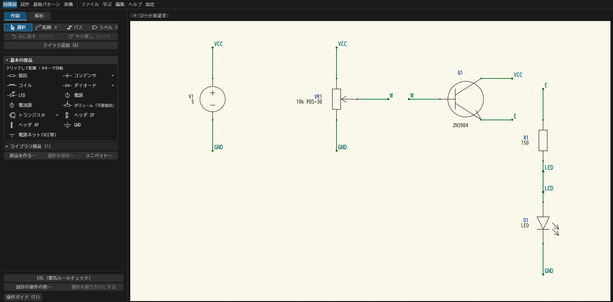
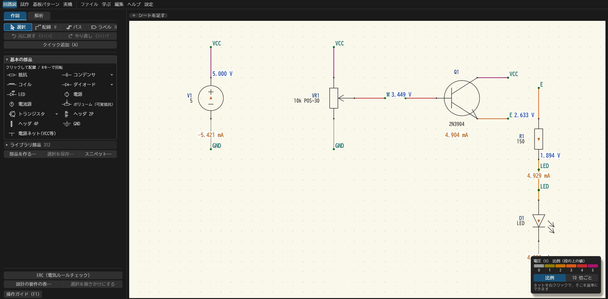
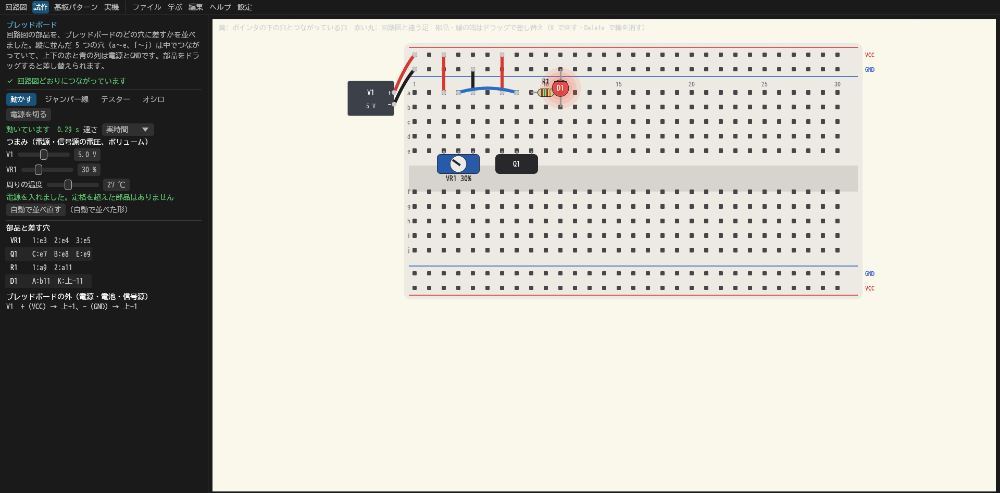
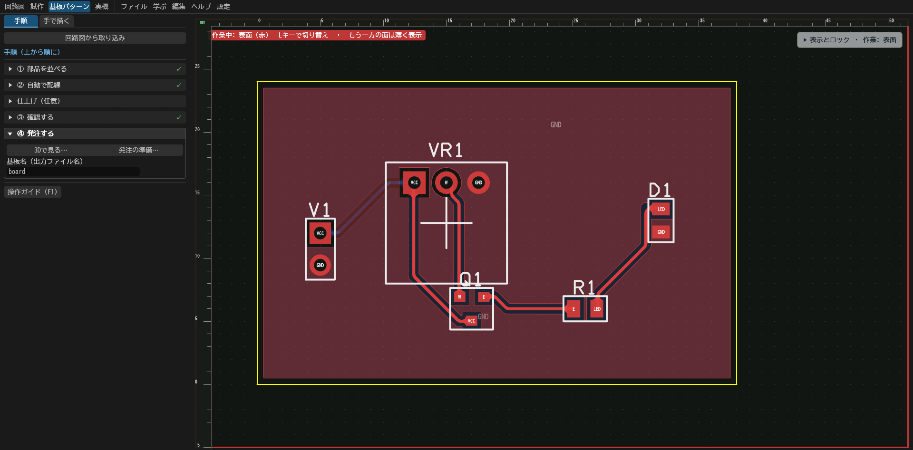
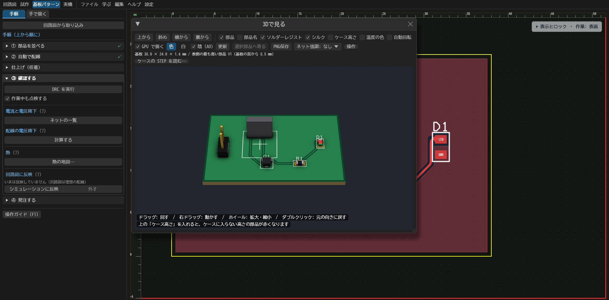
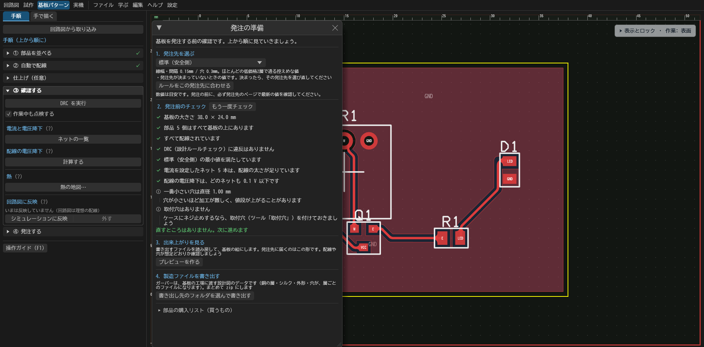
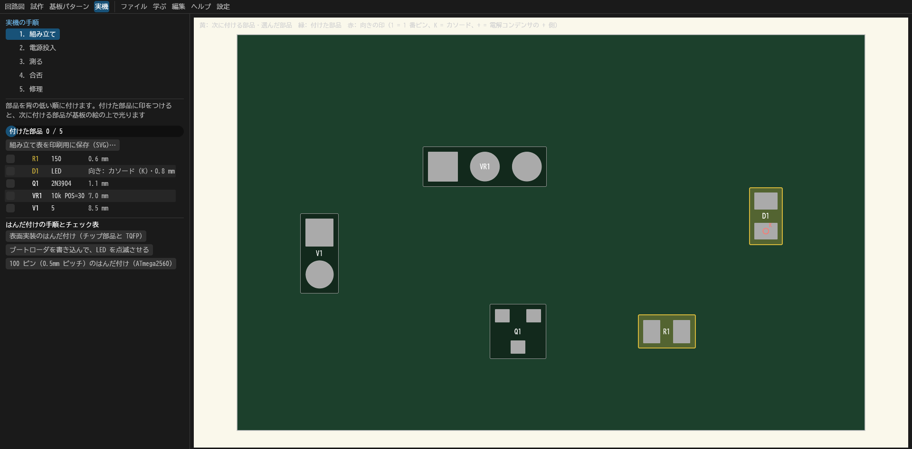
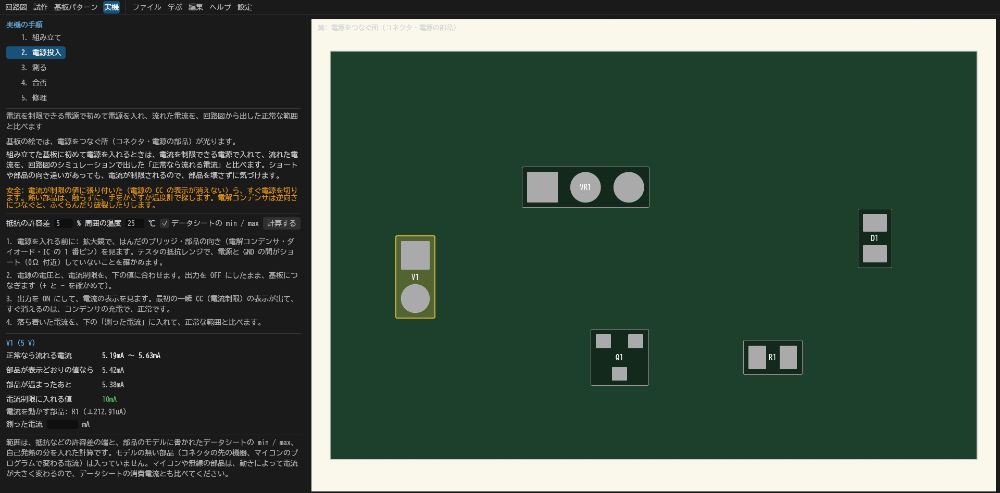

はじめての1枚
「ボリュームを回すと LED の明るさが変わる」小さな回路を例に、circuitCad で 回路図を開く → シミュレーションで確かめる → ブレッドボードで試す → 基板にする → 発注データを出す → 届いた基板に電源を入れる までを、通して歩きます。部品は 5 個、だいたい 20 分です。
準備: リリースページから zip をダウンロードして展開し、circuitCad.exe を起動します。インストールは要りません。画面の上に 回路図 試作 基板パターン 実機 の 4 つのタブが、作る順に並んでいます。このページも、この順に進みます。
1回路図を開く
タブ: 回路図
- メニュー ファイル → サンプル回路を開く から、「ボリュームで LED の明るさを変える」を選びます (ファイルは
docs/examples/pot_dimmer.schjson)。
- 部品は 5 個です。電源 V1 (5 V)、ボリューム VR1 (10 kΩ)、トランジスタ Q1 (2N3904)、抵抗 R1 (150 Ω)、LED D1。
- ボリュームの真ん中の足 (W) の電圧でトランジスタを動かし、トランジスタが LED に流す電流を変えます。VCC・GND・W・E は「ラベル」です。同じ名前のラベルどうしは、線を引かなくてもつながっています。

開いたところ。左のパネルに部品の一覧、下に「ERC (電気ルールチェック)」のボタン
自分で描くときは: 左のパネルの部品をクリックして、回路図の上でクリックすると置けます (R で回転)。配線 のツールで、ピンからピンへクリックすると線が引けます。描き終えたら ERC (電気ルールチェック) で、つなぎ忘れなどを点検します。指摘には、原因と直し方が付いています。ボタンや入力欄にポインタを置くと、説明が出ます。
2シミュレーションで確かめる
タブ: 回路図 → 左のパネルの「解析」
- 左のパネルの 解析 タブで、DC動作点を解析 を押します。
- 電圧は線の色と数字で、電流は矢印と数字で、回路図の上にそのまま出ます。この例では、ボリュームの真ん中 W が約 3.4 V、トランジスタの E が約 2.6 V、LED に約 4.9 mA 流れています。
- 自動で再計算 にチェックを入れてから、作図 タブで VR1 をクリックし、部品の設定の つまみ を動かしてみましょう。動かしながら、電圧と LED の電流が変わります。

DC 動作点の結果。右下の凡例が、線の色と電圧の対応
ほかの解析: 時間で変わる波形は「過渡解析」、周波数の特性は「AC 解析」です。部品が熱くなりすぎていないか (定格) も、解析のあとで自動で点検されます。
3ブレッドボードで試す
タブ: 試作
- 画面の上の 試作 タブを開きます。回路図の部品が、ブレッドボードのどの穴に差さるか、自動で並んでいます。左の「部品と差す穴」の一覧は、実物のブレッドボードに差すときの手順書になります。
- ポインタを穴に合わせると、つながっている穴が黄色く光ります。部品やジャンパー線はドラッグで差し替えられます。回路図と違う差し方をすると、赤い丸と一覧で知らせます。
- 電源を入れる を押すと、差したとおりの回路が動きます。LED が光ります。
- 左の「つまみ」の VR1 を動かすか、絵の上のボリュームをドラッグやホイールで回すと、LED の明るさが変わります。電源の電圧 (V1) や周りの温度も、動かしたまま変えられます。

電源を入れたところ。「回路図どおりにつながっています」と、定格を超えた部品がないことが出ている
壊してみる: 定格を超えた部品は焦げて、回路の中でも壊れます。たとえば回路図で R1 の 1 番の足をボリュームの真ん中の足 (W) に付け替え、LED をボリュームに直接つなぐと、ボリュームを回したときに細い抵抗の膜に電流が集まって焦げ、LED が消えます。実物で試す前に、何が起きるかを安全に見られます。
4基板にする
タブ: 基板パターン
- 基板パターン タブを開き、左の「手順 (上から順に)」の 回路図から取り込み を押します。部品が基板の上に入り、つなぐ相手が細い線 (ラッツネスト) で出ます。
- ① 部品を並べる で自動で配置します。そのあと、部品をドラッグして、線が交わらないように並べ直します (R で回転)。下の絵は、手で並べ直したものです。
- ② 自動配線 で、線 (パターン) を引きます。手で引くこともできます。
- ③ 確認する の DRC を実行 で、線どうしの間隔や太さが決まりを守っているかを点検します。この例は「DRC: 違反 0 件」です。

配線まで終えた基板 (38 × 24 mm、2 層。裏面は GND のベタ)。左の手順に ✓ が付いていく
表と裏: 画面の左上に、いま作業している面 (赤は表) が出ます。L キーで作業する面を切り替え、もう一方の面は薄く表示されます。右上の「表示とロック」で、層ごとの表示を切り替えられます。
53D で見る
タブ: 基板パターン → ④ 発注する → 3Dで見る
- ④ 発注する の 3Dで見る… で、出来上がりを立体で見ます。ドラッグで回し、ホイールで拡大します。
- 部品の高さが分かります。ケースに入れるなら、上の ケース高さ を入れると、入らない部品が赤くなります。

3D の窓。STEP にも書き出せるので、ほかの CAD でケースを作るときに使えます
6発注データを出す
タブ: 基板パターン → ④ 発注する → 発注の準備
- 発注の準備… を開きます。上から順に進む窓です。
- 1. 発注先を選ぶ: JLCPCB・PCBWay・OSH Park から選び、ルールをこの発注先に合わせる を押します。決まっていなければ「標準 (安全側)」のままで構いません。
- 2. 発注前のチェック: 基板の大きさ、部品が基板の上にあるか、未配線、DRC、線の太さと電流などを確かめます。✓ が並び、「直すところはありません。次に進めます」と出れば OK です。
- 3. 出来上がりを見る: プレビューを作る で、届く基板の姿を見ます。
- 4. 製造ファイルを書き出す: フォルダを選ぶと、Gerber (銅・シルク・外形)、ドリル、部品表 (BOM)、部品の位置のファイルと、それをまとめた zip ができます。この zip を発注先のページにアップロードします。

発注の準備。いちばん下の「部品の購入リスト」から、買う部品の一覧も作れます
注意: circuitCad はアルファ版で、このソフトで作ったデータで基板を発注した実績はまだありません。初めての発注は少ない枚数で試し、発注先のサイトのプレビュー (ガーバービューア) でも必ず確かめてください。
7届いた基板を組み立てる
タブ: 実機 → 1. 組み立て
- 基板が届いたら、実機 タブを開きます。左に 組み立て → 電源投入 → 測る → 合否 → 修理 の手順が並んでいます。
- 1. 組み立て では、部品が背の低い順 (R1 0.6 mm → D1 → Q1 → VR1 → V1 のヘッダ) に並びます。付けた部品に印をつけると、次に付ける部品が基板の絵の上で光ります。LED のような向きのある部品には、向き (カソード) の印が出ます。
- 組み立て表を印刷用に保存 (SVG) で、はんだ付けの順と向きの印を、紙に印刷できます。

組み立て。次に付ける R1 と D1 が黄色く光っている
8はじめて電源を入れる
タブ: 実機 → 2. 電源投入
- 2. 電源投入 を開くと、回路図のシミュレーションから、正常なら流れる電流の範囲 (この例は約 5.2〜5.6 mA) と、電源の電流制限に入れる値 (10 mA) が出ます。範囲は、抵抗の許容差や部品のばらつきを入れて計算したものです。
- 電源を入れる前に、はんだのブリッジや部品の向きを見て、テスターで電源と GND の間がショートしていないか確かめます。
- 電流を制限できる電源を 10 mA に合わせてからつなぎ、出力を入れます。落ち着いた電流を「測った電流」に入れると、正常な範囲と比べて、多すぎる・少なすぎるときに疑う所を並べます。
- そのあとは 3. 測る、4. 合否、5. 修理 と進みます。どの手順でも、基板の絵で、その手順に関わる所が光ります。

電源投入。基板の絵では、電源をつなぐ所 (V1) が光る
安全: 電流が制限の値に張り付いたら (電源の CC の表示が消えない)、すぐに電源を切ってください。熱い部品は触らずに、手をかざすか温度計で探します。
この先へ
- 基礎から学ぶ: メニュー 学ぶ → 学習パス。オームの法則から、安定化電源・Arduino 互換ボード・修理まで、9 本の道があります。
- ほかのサンプル: ファイル → サンプル回路を開く に、130 本以上の回路があります。部品 41 個の総合デモには、手で配線した基板も付いています。
- 操作で迷ったら: F1 で操作ガイドが開きます。Ctrl+K で、操作を名前で探せます。
- 機能の一覧: 紹介ページの「機能の一覧」と、README。
- 分かりにくかった所は、Issues で教えてください。